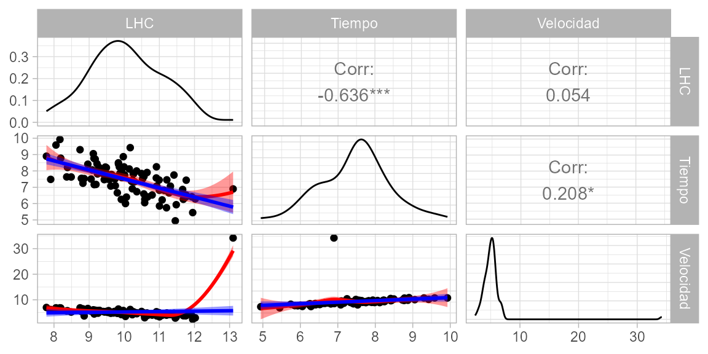
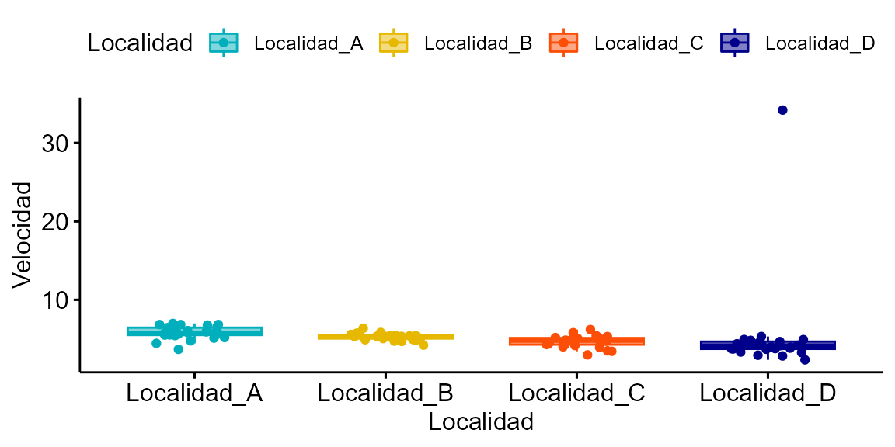
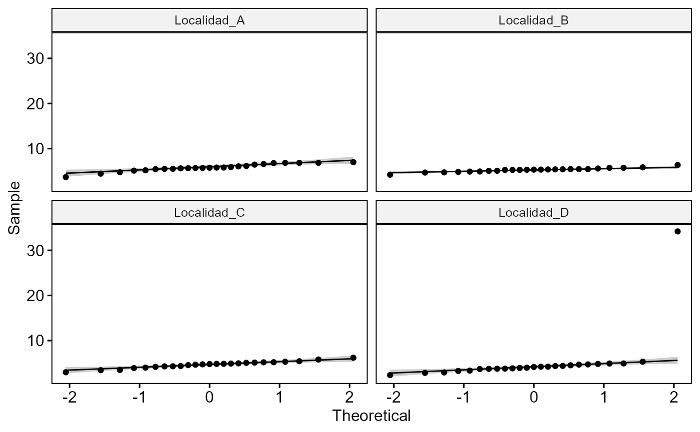
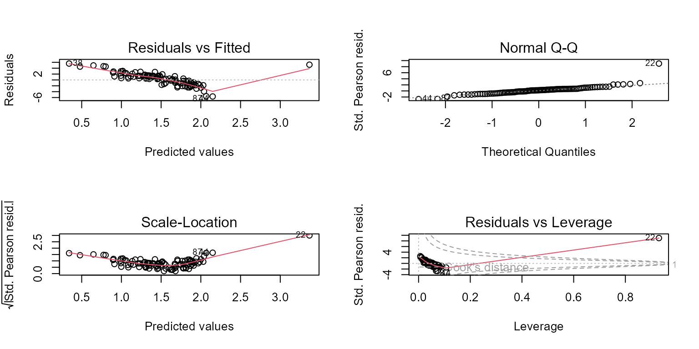
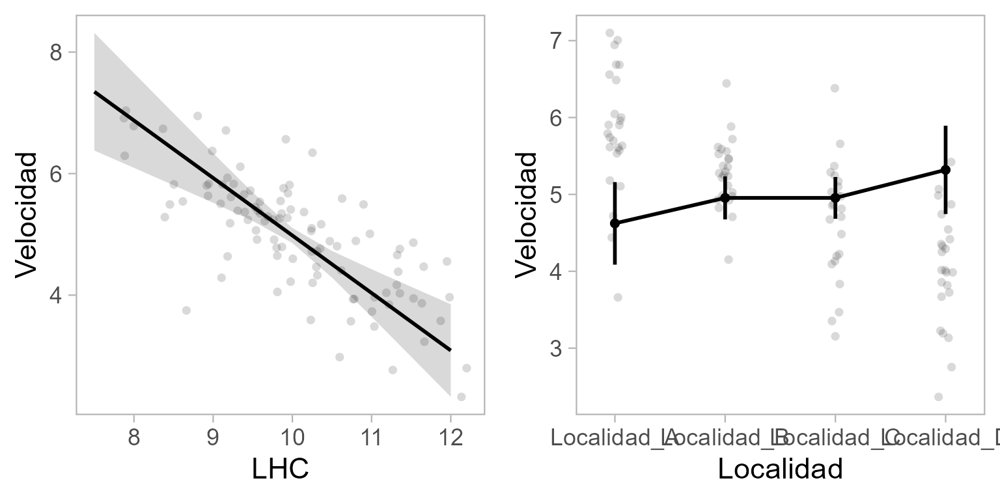
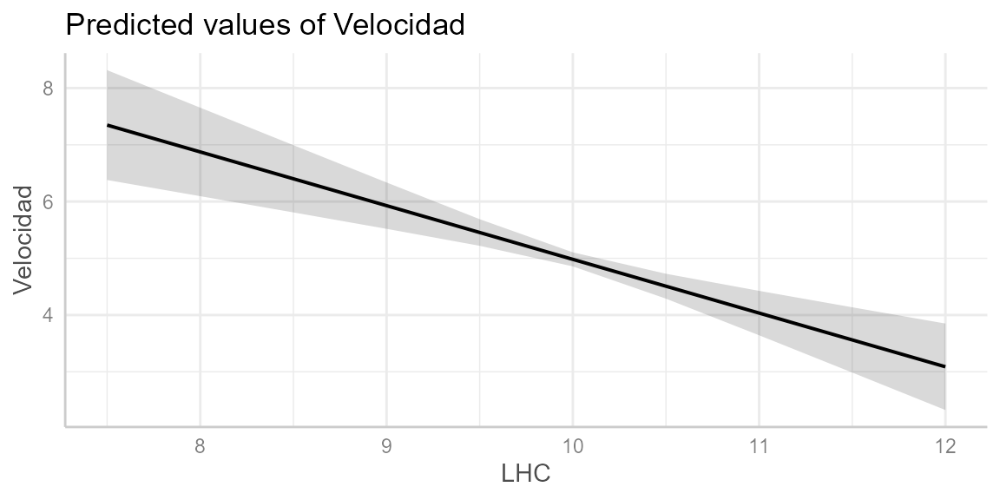
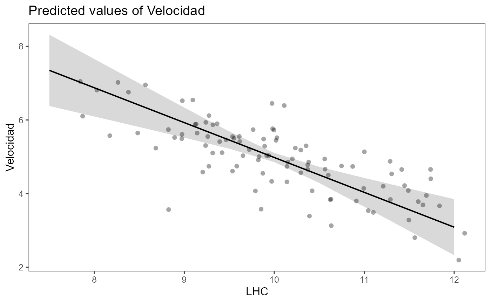

Tlamatini - Modelos Lineales Generalizados (GLM)
Source:vignettes/Tlamatini-Modelos-Lineales-Generalizados-GLM.Rmd
Tlamatini-Modelos-Lineales-Generalizados-GLM.Rmd ##~~~~~~~~~~~~~~~~~~~~~~~~~~~~~~~~~~~~~~~~~~~~~~~~~~~~~~~~~~~~~~~~~~~~~~~~~~~~~~
## … —-
##~~~~~~~~~~~~~~~~~~~~~~~~~~~~~~~~~~~~~~~~~~~~~~~~~~~~~~~~~~~~~~~~~~~~~~~~~~~~~~
##~~~~~~~~~~~~~~~~~~~~~~~~~~~~~~~~~~~~~~~~~~~~~~~~~~~~~~~~~~~~~~~~~~~~~~~~~~~~~~
## … —-
##~~~~~~~~~~~~~~~~~~~~~~~~~~~~~~~~~~~~~~~~~~~~~~~~~~~~~~~~~~~~~~~~~~~~~~~~~~~~~~
Este paquete contiene funciones útiles para el análisis de datos, principalmente para modelos lineales (LM, GLM, GLMM). Aunque está pensado para usarse en Ciencias Biológicas, su aplicación se extiende a cualquier área del conocimiento que requiera análisis estadísticos. Es una compilación de funciones útiles creadas por mi o por alguien más, que facilitan el análisis de datos: exploración y transformaciones de datos, revisión de los supuestos de los modelos lineales (LM, LMM, GLM, GLMM), exportación de tablas, entre otros.
Para más información sobre el paquete y actualizaciones, visita la página: https://mariosandovalmx.github.io/tlamatini-website/
Para citar este paquete: Mario A. Sandoval-Molina (2021). tlamatini: Funciones útiles para biologxs y ecologxs confundidos con los modelos lineales. R package. https://doi.org/10.5281/zenodo.7765347
Si quieres conocer más de mi trabajo, visita mi pagina web: https://mariosandovalmx.github.io/ecology/
Para este ejemplo sobre como ajustar Modelos Lineales Generalizados (GLM) usando Tlamatini vamos a usar una base de datos ficticia (los datos no son reales) que contiene la longitud hocico-cloaca de lagartijas de la especie Sceloporus torquatus en cuatro localidades distintas, que vamos a llamar A, B, C y D. Además, contiene la velocidad de desplazamiento y el tiempo de reacción de cada lagartija.
La base de datos se puede descargar del siguiente enlace: descargar datos
Vamos a cargar la base de datos:
df <- read.csv("https://raw.githubusercontent.com/mariosandovalmx/examples-data/main/datos.GLM1.csv", header=TRUE)##Exploración de datos Así luce nuestra base de datos:
head(df)
#> LHC Velocidad Tiempo Localidad
#> 1 8.362033 5.625505 7.632080 Localidad_A
#> 2 11.762914 3.847125 6.518618 Localidad_D
#> 3 9.119546 6.067273 9.053450 Localidad_A
#> 4 10.207365 5.128038 7.369430 Localidad_C
#> 5 11.480672 3.274195 5.931493 Localidad_D
#> 6 9.837144 5.588090 8.415775 Localidad_BPara este ejemplo vamos a comenzar cargando la paquetería.
library(tlamatini)
#> Registered S3 method overwritten by 'GGally':
#> method from
#> +.gg ggplot2
#>
#>
#> ##~~~~~~~~~~~~~~~~~~~~~~~~~~~~~~~~~~~~~~~~~~~~~~~~~~~~~~~~~~~~~~~~~~~~~~~~~~~~~~
#> ## Tlamatini - R package ----
#> ##~~~~~~~~~~~~~~~~~~~~~~~~~~~~~~~~~~~~~~~~~~~~~~~~~~~~~~~~~~~~~~~~~~~~~~~~~~~~~~
#>
#> El paquete Tlamatini se ha cargado con éxito. ¡Espero que lo disfrutes!
#> Actualizaciones y más información en:
#>
#> https://mariosandovalmx.github.io/tlamatini-website/
#>
#> Email de contacto: sandoval.m@hotmail.com
#> Para citar este paquete: Mario A. Sandoval-Molina (2021). tlamatini: Funciones utiles
#> para biologxs y ecologxs confundidos con los modelos lineales. R package. https://doi.org/10.5281/zenodo.7765347Vamos a comenzar por convertir todas las variables categóricas a factor. La función as_factorALL va a reconocer todas las variables que son tipo “caracter” y las va a codificar como factor automáticamente. Nota: solo funciona con variables que contienen letras, no funciona si la columna es numérica.
df<- as_factorALL(df)
#> Todas las columnas tipo caracter convertidas a factoresVamos a explorar si hay datos faltantes en las variables numéricas, también vemos la media, el mínimo y máximo de cada variable, además de otros parámetros.
numSummary(df)
#> n media sd max min rango nunicos nceros iqr limitinferior
#> LHC 100 10.05 1.048 13.10 7.78 5.32 100 0 1.51 7.02
#> Velocidad 100 5.07 1.317 14.19 2.35 11.84 100 0 1.23 2.53
#> Tiempo 100 7.48 0.913 9.93 4.94 4.98 100 0 1.16 5.12
#> limitesuperior noutlier kurtosis asimetria mode faltantes %faltantes
#> LHC 13.10 1 -0.290 0.179 8.36 0 0
#> Velocidad 7.44 2 20.799 3.118 5.63 0 0
#> Tiempo 9.71 2 0.147 -0.026 7.63 0 0
#> 1% 5% 25% 50% 75% 95% 99%
#> LHC 7.90 8.35 9.29 9.96 10.82 11.76 12.03
#> Velocidad 2.84 3.34 4.36 5.08 5.60 6.79 7.06
#> Tiempo 5.44 6.00 6.85 7.53 7.97 8.91 9.59También podemos explorar las variables categóricas:
charSummary(df)
#> n faltantes %faltantes unique
#> E 100 0 0 4
#> top5:conteos
#> E Localidad_A:25, Localidad_B:25, Localidad_C:25, Localidad_D:25¡No hay datos faltantes en las variables!
También nos interesa saber cómo se relacionan las variables explicativas con nuestra variable de respuesta, en este caso velocidad. Para ello usamos la función ggpairs_dfnum, que nos da el valor de correlación y el valor de p. Como vemos en la gráfica, la velocidad de desplazamiento de las lagartijas se correlaciona negativamente con la longitud hocico cloaca. También vemos que el tiempo de reacción se correlaciona positivamente con la velocidad.
ggpairs_dfnum(df, var.response = "Velocidad")
#> `geom_smooth()` using formula = 'y ~ x'
#> `geom_smooth()` using formula = 'y ~ x'
#> `geom_smooth()` using formula = 'y ~ x'
#> `geom_smooth()` using formula = 'y ~ x'
#> `geom_smooth()` using formula = 'y ~ x'
#> `geom_smooth()` using formula = 'y ~ x'
Ahora vamos a graficar la velocidad por Localidad, para ello usaremos la paquetería ggpubr:
library(ggpubr)
#> Loading required package: ggplot2
ggboxplot(df, "Localidad", "Velocidad",
color = "Localidad", palette =c("#00AFBB", "#E7B800", "#FC4E07", "darkblue"),
add = "jitter", fill = "Localidad", alpha= 0.5)
Y si quisiéramos saber que si nuestra variable de respuesta sigue una distribución normal podemos hacer un histograma de frecuencias. Para ello usamos la función hist_curva. A la izquierda tenemos el histograma y a la derecha el Q-Q plot que nos muestra la distribución de nuestra variable de respuesta.
hist_curva(df$Velocidad)
#> Prueba de normalidad
#> Asymptotic one-sample Kolmogorov-Smirnov test
#>
#> data: variable
#> D = 0.1, p-value = 0.02
#> alternative hypothesis: two-sided#> [1] 22 87La prueba de Kolmogorov-Smirnov indica que no la distribución NO es parecida a la normal. Además nos dice que hay dos datos extremos, el 22 y 87. Tenemos que revisar estas observaciones.
Si quisieramos hacer la prueba de normalidad por localidad podemos usar las funciones norm.shapiro.grupos,norm.ad.grupos o norm.lks.grupos. Si queremos usar una prueba Shapiro Wilk:
norm.shapiro.grupos(Velocidad~ Localidad, df)
#> Prueba de normalidad de Shapiro-Wilk por grupos.
| Localidad | statistic | p.value |
|---|---|---|
| Localidad_A | 0.95 | 0.23 |
| Localidad_B | 0.96 | 0.47 |
| Localidad_C | 0.98 | 0.91 |
| Localidad_D | 0.52 | 5.59e-08 |
La prueba nos muestra que todas las localidades, excepto la D, se distribuyen normalmente. Al menos numericamente, por que visualmente todas se ajustan perfectamente. Conviene revisar el punto que sale fuera de la distribución, como haremos más adelante.
Podemos ajustar un modelo lineal generalizado (GLM). Los modelos lineales generalizados pueden tener errores o distribuciones no normales. Sin embargo, existen limitaciones en cuanto a las posibles distribuciones. Por ejemplo, se puede utilizar la familia Poisson para datos de conteos, o puede utilizar la familia binomial para datos binomiales. La distribución gaussiana es adecuada cuando los errores en el modelo siguen una distribución normal y la variable de respuesta también se distribuye normalmente.
Con esta base de datos vamos a ajustar dos modelos lineales generalizados, el primero con la distribución gaussiana y función de liga ‘log’. El segundo con distribución gaussiana y función de liga ‘identity’. Usaremos la Velocidad como variable de respuesta. Además, usaremos la variable longitud hocico-cloaca (LHC) y Localidad como variables explicativas.
modelo <- glm(Velocidad ~ LHC + Localidad, family = gaussian("log"), data= df)
modelo2 <- glm(Velocidad ~ LHC + Localidad, family = gaussian("identity"), data= df)
AIC(modelo, modelo2)
#> df AIC
#> modelo 6 327
#> modelo2 6 326De acuerdo con el Criterio de información de Akaike (AIC), el primer modelo2 es mejor. Vamos a ver el summary del modelo y la tabla ANOVA tipo III:
summary(modelo2)
#>
#> Call:
#> glm(formula = Velocidad ~ LHC + Localidad, family = gaussian("identity"),
#> data = df)
#>
#> Deviance Residuals:
#> Min 1Q Median 3Q Max
#> -2.353 -0.459 -0.046 0.321 8.871
#>
#> Coefficients:
#> Estimate Std. Error t value Pr(>|t|)
#> (Intercept) 1.218 2.890 0.42 0.6744
#> LHC 0.533 0.328 1.62 0.1080
#> LocalidadLocalidad_B -1.084 0.450 -2.41 0.0179 *
#> LocalidadLocalidad_C -2.056 0.614 -3.35 0.0012 **
#> LocalidadLocalidad_D -2.880 0.943 -3.05 0.0029 **
#> ---
#> Signif. codes: 0 '***' 0.001 '**' 0.01 '*' 0.05 '.' 0.1 ' ' 1
#>
#> (Dispersion parameter for gaussian family taken to be 1.43)
#>
#> Null deviance: 171.75 on 99 degrees of freedom
#> Residual deviance: 135.94 on 95 degrees of freedom
#> AIC: 326.5
#>
#> Number of Fisher Scoring iterations: 2La LCH no es significativa p>0.001 pero… Atención: Debemos revisar el ajuste del modelo antes de hacer cualquier interpretación de resultados. Esto lo podemos hacer con la función resid_glm.
Para explorar un modelo lineal generalizado (GLM) hay varios criterios que se pueden evaluar para comprobar el buen ajuste de un modelo.
Normalidad: Los residuales son las diferencias entre los valores observados y los valores predichos por el modelo. Si los residuos siguen una distribución normal, eso significa que los errores del modelo son aleatorios y no presentan patrones que indiquen un mal ajuste del modelo.
Homocedasticidad: Comprobar si la varianza de los residuales es constante en todo el rango de los valores ajustados. Esto se puede evaluar mediante gráficos de dispersión de los residuales estandarizados o los residuales absolutos frente a los valores ajustados.
Influencia de observaciones influyentes (outliers): Identificar observaciones influyentes o valores atípicos que puedan tener un impacto desproporcionado en el modelo. Esto se puede hacer mediante la detección de valores altos de los residuales estandarizados.
Autocorrelación: Revisar si hay autocorrelación en los residuales, lo que indica la presencia de dependencia entre las observaciones. Esto se puede evaluar mediante pruebas de autocorrelación o trazando gráficos de autocorrelación de los residuales.
Multicolinealidad: Examinar la presencia de alta correlación entre las variables predictoras, lo que puede dificultar la interpretación de los coeficientes del modelo. Esto se puede evaluar mediante el cálculo del factor de inflación de la varianza (VIF) para cada variable predictora. Vamos a explorar los residuales del modelo:

En la primera gráfica, la línea roja es horizontal y aplanada sobre la línea punteada, indica buen ajuste, homocedasticidad. El QQPlot se ve bien, la mayoría de los puntos se ajustan a la línea punteada, lo cual indica que los residuales se aproximan a la distribución normal. Pero si vemos el gráfico de abajo a la derecha notamos que tenemos una observación influyente, el dato 22.
En un GLM, los outliers pueden influir en los resultados y sesgar las estimaciones de los coeficientes. Por lo tanto, es importante identificar y, en algunos casos, remover los outliers antes de ajustar el modelo. Existen varios criterios comunes para identificar outliers en un GLM:
Residuos estandarizados: Los residuos estandarizados son una medida de la distancia entre los valores observados y los valores predichos por el modelo. Los outliers pueden ser identificados como aquellos puntos cuyos residuos estandarizados están por encima de un umbral determinado, como 2 o 3 desviaciones estándar. Podemos analizarlos con la función outliers.plot.
Distancia de Cook: La distancia de Cook es una medida de la influencia de cada observación en los coeficientes del modelo. Los puntos con una distancia de Cook alta pueden considerarse outliers y pueden ser removidos. Podemos analizarlos con la función outliers.plot2.
Gráficos de residuos: Los gráficos de residuos, como el gráfico de residuos vs valores ajustados o el gráfico de residuos versus variables explicativas, pueden ayudar a identificar outliers visualmente. Los puntos que se encuentran lejos de la línea de referencia en estos gráficos pueden ser considerados outliers. Podemos explorarlos visualmente con la gráfica anterior, Residuals VS Leverage.
Vamos a comprobarlo.
Primero, podemos usar la función outliers.plot para comprobar estas observaciones influyentes:
outliers.plot2(modelo2)
#> Las distancias de Cook, es una medida de cómo influye la observación identificada como outlier sobre la estimación de B (pendiente) al ser retirada del conjunto de datos. Una distancia de Cook grande significa que una observación tiene un peso grande en la estimación de la pendiente. En el gráfico las observaciones con círculos grandes son consideradas outliers influyentes.El dato que se encuentra en la fila 22 tiene un valor de std.resid mayor a 3, y el valor de p con ajuste de Bonferroni es < 0.05, lo que nos indica que puede ser un dato influyente y tenemos que revisar esta observación.
También podemos usar la función outliers.DHARMa para comprobar estas observaciones influyentes:
outliers.DHARMa(modelo2)
#> Si el valor de p < 0.05, entonces hay observaciones influyentes en nuestros datos. ¿Que hacer con los outlieres? algunos investigadores sugieren remover algunos outliers (no todos), de esta forma se puede lograr un mejor ajuste del modelo.
#>
#> DHARMa outlier test based on exact binomial test with approximate
#> expectations
#>
#> data: res.mod
#> outliers at both margin(s) = 1, observations = 100, p-value = 0.6
#> alternative hypothesis: true probability of success is not equal to 0.00797
#> 95 percent confidence interval:
#> 0.000253 0.054459
#> sample estimates:
#> frequency of outliers (expected: 0.00796812749003984 )
#> 0.01#> Esta función usa bootstrap para simular los outliers (posibles) basándose en la simulación de los valores atípicos. Las observaciones mas influyentes son:
#> [1] 22Tendremos que corroborar que esta observación es correcta y no cometimos ningún error al capturar nuestros datos. Vamos a suponer que fue un error de medición y no podemos confiar en este dato, y no hay forma de repetir la medición. Así que lo vamos a remover y volver a ajustar el modelo:
Una forma de remover los outliers es usando la función outlierKD que remueve todas las observaciones influyentes.
Pero vamos a remover manualmente esta observación:
library(dplyr)
#>
#> Attaching package: 'dplyr'
#> The following objects are masked from 'package:stats':
#>
#> filter, lag
#> The following objects are masked from 'package:base':
#>
#> intersect, setdiff, setequal, union
df2 <- slice(df, -c(22))
modelo3 <- glm(Velocidad ~ LHC + Localidad, family = gaussian("identity"), data= df2)Pero volvemos a corroborar los residuales del modelo para saber si hay un buen ajuste:
Examinamos el resumen del modelo:
summary(modelo3)
#>
#> Call:
#> glm(formula = Velocidad ~ LHC + Localidad, family = gaussian("identity"),
#> data = df2)
#>
#> Deviance Residuals:
#> Min 1Q Median 3Q Max
#> -1.4472 -0.3684 0.0471 0.3916 1.3952
#>
#> Coefficients:
#> Estimate Std. Error t value Pr(>|t|)
#> (Intercept) 14.039 1.581 8.88 4.4e-14 ***
#> LHC -0.929 0.180 -5.17 1.3e-06 ***
#> LocalidadLocalidad_B 0.236 0.231 1.02 0.31
#> LocalidadLocalidad_C 0.224 0.325 0.69 0.49
#> LocalidadLocalidad_D 0.570 0.498 1.15 0.26
#> ---
#> Signif. codes: 0 '***' 0.001 '**' 0.01 '*' 0.05 '.' 0.1 ' ' 1
#>
#> (Dispersion parameter for gaussian family taken to be 0.337)
#>
#> Null deviance: 87.756 on 98 degrees of freedom
#> Residual deviance: 31.680 on 94 degrees of freedom
#> AIC: 180.1
#>
#> Number of Fisher Scoring iterations: 2Comprobamos si aún tenemos outliers en el nuevo modelo:
outliers.plot(modelo3)
#> ################################################################################################
#> Observaciones con std.resid (residuales estandarizados) > 3, son consideradas valores atípicos. Index es número de fila donde se encuentra la observación.
#> ################################################################################################
#> # A tibble: 0 × 10
#> # ℹ 10 variables: Velocidad <dbl>, LHC <dbl>, Localidad <fct>, .fitted <dbl>,
#> # .resid <dbl>, .hat <dbl>, .sigma <dbl>, cooksd <dbl>, StdResid <dbl>,
#> # outlierID <int>
#> ################################################################################################
#> En el gráfico de la derecha se marcan en rojo las observaciones influyentes.No todos los outliers son observaciones influyentes. Para revisar que los datos contienen potenciales datos influyentes, se puede inspeccionar los residuales estandarizados. Datos con residuales estandarizados absolutos mayores a 3 representan posibles outliers y merecen atención. Sugerencia: 1) remover, 2)transformar los datos, 3) usar métodos no paramétricos. A continuación se hace una prueba Bonferroni para cada dato identificado como outlier.
#> ################################################################################################
#> No Studentized residuals with Bonferroni p < 0.05
#> Largest |rstudent|:
#> rstudent unadjusted p-value Bonferroni p
#> 22 -2.63 0.0085 0.841
#> ################################################################################################
Ya no tenemos outliers, lo ideal sería evitar remover observaciones. Pero si estamos seguros de que el outlier es un error o no es una observación confiable tenemos que quitarla de la base de datos.
Ahora vamos a revisar la multicolinealidad usando la función VIF_model y VIF_plot. La multicolinealidad en los modelos de regresión generalizada (GLM) se refiere a la presencia de alta correlación entre las variables predictoras. Esto puede causar problemas en la estimación de los coeficientes de regresión, ya que dificulta la identificación de la contribución individual de cada variable en el modelo.
Cuando existe multicolinealidad, las estimaciones de los coeficientes pueden volverse inestables y poco confiables. Además, la multicolinealidad puede hacer que los intervalos de confianza sean demasiado amplios, lo que dificulta la interpretación de los resultados.
VIF_model(modelo3)
#> # Comprobación de la multicolinealidad
#>
#> Correlación moderada
#>
#> Term VIF VIF 95% CI Increased SE Tolerance Tolerance 95% CI
#> LHC 9.54 [6.80, 13.56] 3.09 0.10 [0.07, 0.15]
#> Localidad 9.54 [6.80, 13.56] 3.09 0.10 [0.07, 0.15]
VIF_plot(modelo3)
#> Variable `Component` is not in your data frame :/
#> Scale for colour is already present.
#> Adding another scale for colour, which will replace the existing scale.Hay diferentes criterios de seleccipon pero en general un valor VIF mayor a 1 indica la presencia de multicolinealidad, y valores superiores a 5 o 10 suelen ser considerados problemáticos. Por lo que quizá convendria remover alguna de las dos variables o analizar por separado cada variable. Por ahora vamos a ignorar este problema y asumir que no hay problemas.
El modelo tiene buen ajuste y ya podemos examinar los resultados con la tabla de ANOVA tipo III usando la función table_ANOVA3. La tabla de ANOVA tipo III es útil para evaluar la importancia relativa de las variables del modelo y determinar qué variables tienen un efecto significativo en la variable de respuesta.
table_ANOVA3(modelo3)| Variables | LR.Chisq | DF | P.value | |
|---|---|---|---|---|
| LHC | 26.72 | 1 | <0.001 *** | |
| Localidad | 2.11 | 3 | 0.550 | |
| <0.001 ‘’ 0.001 ‘’ 0.01 ‘’ 0.05 ‘.’ | ||||
En el modelo ahora muestra que la variable LHC es significativa, pero no hay un efecto significativo de la localidad. Vamos a graficar los efectos del modelo con la función plot_effects:
plot_effects(modelo3)
o bien con la función plot_effects2:
plot_effects2(modelo3, lineas = TRUE, puntos = TRUE, grids = FALSE)
Otra forma de graficar las variables es usando el paquete ggeffects. Este paquete nos permite obtener gráficos estéticos usando ggplot como interfaz.
Y podemos usar los diferentes temas predefinidos para artículo científico o para presentación. Por ejemplo:
pl <- plot(dat, add.data = TRUE)
pl + tema_articulo()
# o cambiar los parámetros de tamaño de letra en los ejes X y Y:
#pl + tema_articulo(14,14)
#pl + tema_articulo2()
#pl + tema_presentacion()
pl + tema_articulo2()
# o cambiar los parámetros de tamaño de letra en los ejes X y Y:
#pl + tema_articulo(14,14)
#pl + tema_articulo2()
#pl + tema_presentacion()Ahora vamos a obtener la tabla del modelo. De esta forma podremos copiar las tablas y pegarlas directamente en nuestro documento de Word.
table.models(modelo3)| Velocidad | ||||
|---|---|---|---|---|
| Predictors | Estimates | std. Error | Statistic | p |
| (Intercept) | 14.039 | 1.581 | 8.882 | <0.001 |
| LHC | -0.929 | 0.180 | -5.169 | <0.001 |
| Localidad [Localidad_B] | 0.236 | 0.231 | 1.021 | 0.307 |
| Localidad [Localidad_C] | 0.224 | 0.325 | 0.690 | 0.490 |
| Localidad [Localidad_D] | 0.570 | 0.498 | 1.145 | 0.252 |
| Observations | 99 | |||
| R2 | 0.639 | |||
| AIC | 180.145 | |||
Luego vamos a obtener los contrastes post-hoc Tuckey, en este caso la Localidad no es significativa pero para fines demostrativos vamos a hacerlo usando la paquetería emmeans. Y usando la función table_contrasts para obtener los contrastes en una tabla.
library(emmeans)
cont1 <- emmeans(modelo3, pairwise ~ Localidad,adjust="tukey",type="response")$contrasts
table_contrasts(cont1)| contrast | estimate | SE | df | t.ratio | p.value | |
|---|---|---|---|---|---|---|
| Localidad_A - Localidad_B | -0.230 | 0.230 | 94 | -1.020 | 0.738 | |
| Localidad_A - Localidad_C | -0.220 | 0.324 | 94 | -0.690 | 0.901 | |
| Localidad_A - Localidad_D | -0.570 | 0.498 | 94 | -1.140 | 0.663 | |
| Localidad_B - Localidad_C | 0.011 | 0.202 | 94 | 0.056 | 1.000 | |
| Localidad_B - Localidad_D | -0.330 | 0.349 | 94 | -0.950 | 0.773 | |
| Localidad_C - Localidad_D | -0.340 | 0.251 | 94 | -1.370 | 0.518 | |
| <0.001 ‘’ 0.001 ‘’ 0.01 ‘’ 0.05 ‘.’ | ||||||
Finalmente, vamos a graficar los efectos en un boxplot y colocar los valores de p que acabamos de obtener anteriormente:
boxplot_emmeans(formula = Velocidad ~ Localidad, modelo=modelo3, data= df)#> # A tibble: 6 × 7
#> group1 group2 df statistic p p.adj p.adj.signif
#> <chr> <chr> <dbl> <dbl> <dbl> <dbl> <chr>
#> 1 Localidad_A Localidad_B 94 -1.02 0.310 1 ns
#> 2 Localidad_A Localidad_C 94 -0.690 0.492 1 ns
#> 3 Localidad_A Localidad_D 94 -1.15 0.255 1 ns
#> 4 Localidad_B Localidad_C 94 0.0566 0.955 1 ns
#> 5 Localidad_B Localidad_D 94 -0.958 0.340 1 ns
#> 6 Localidad_C Localidad_D 94 -1.38 0.172 1 ns